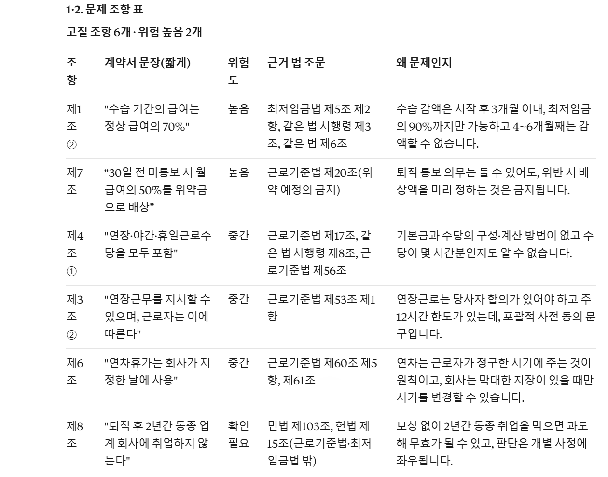
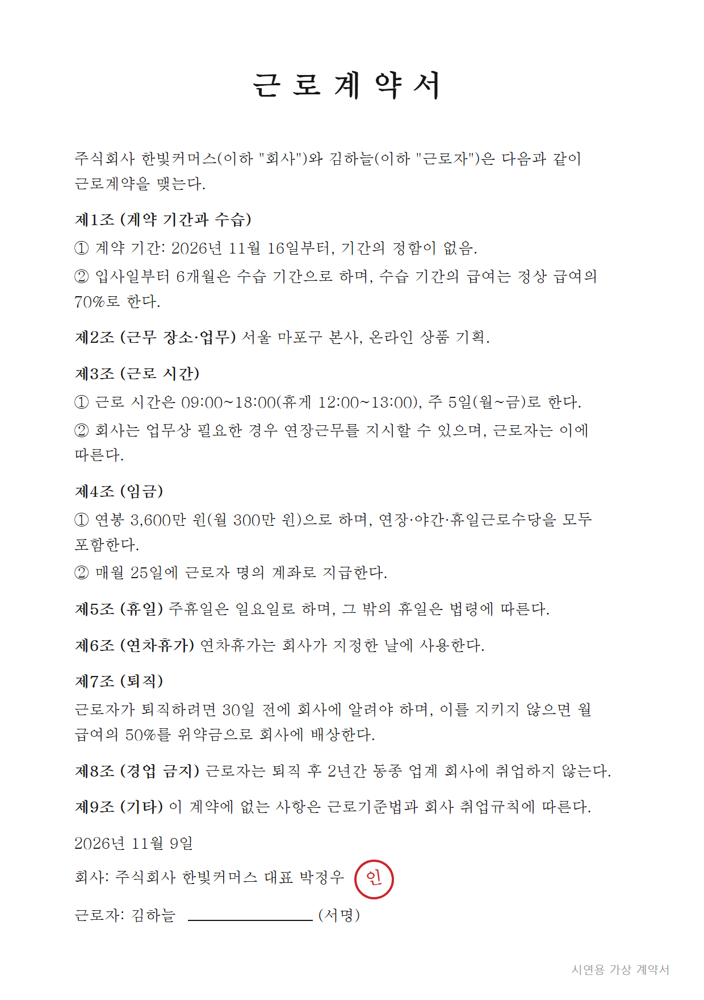
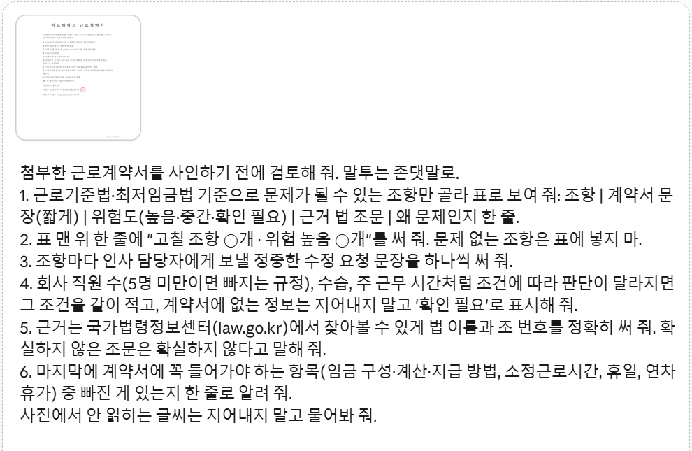
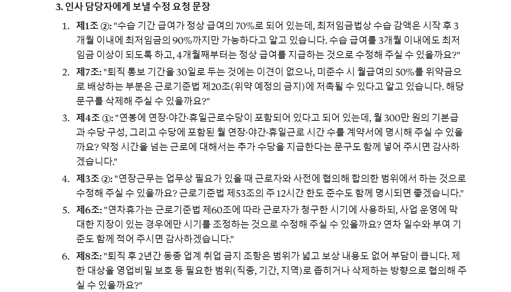
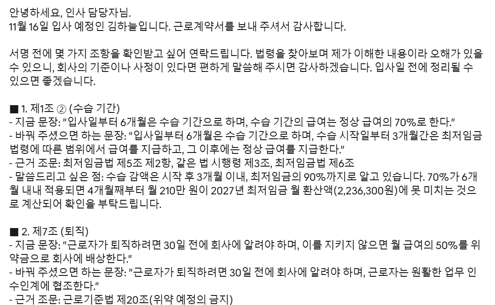
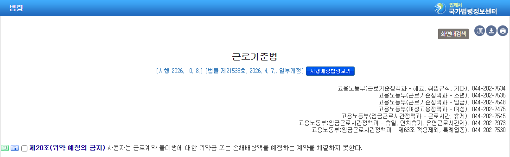
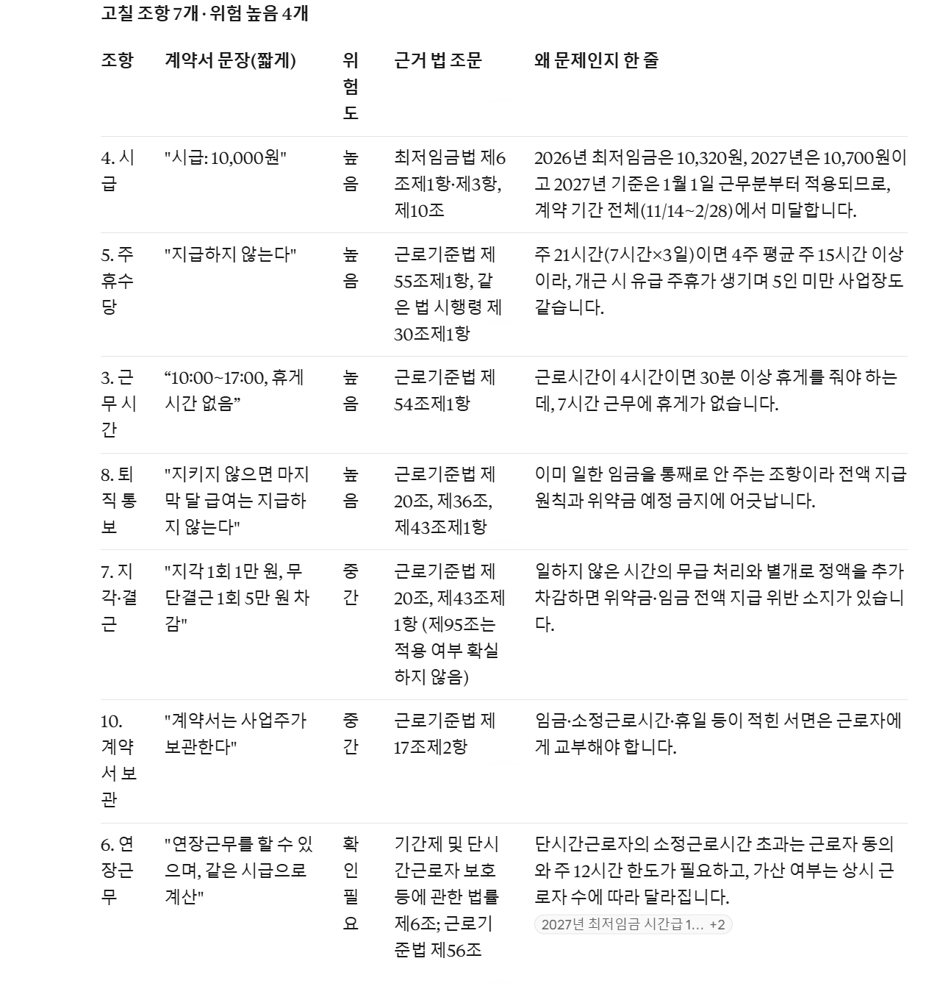
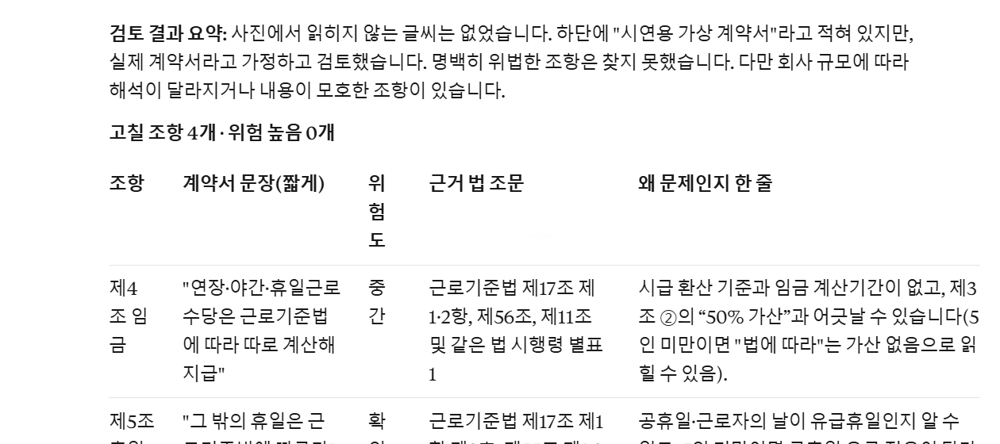
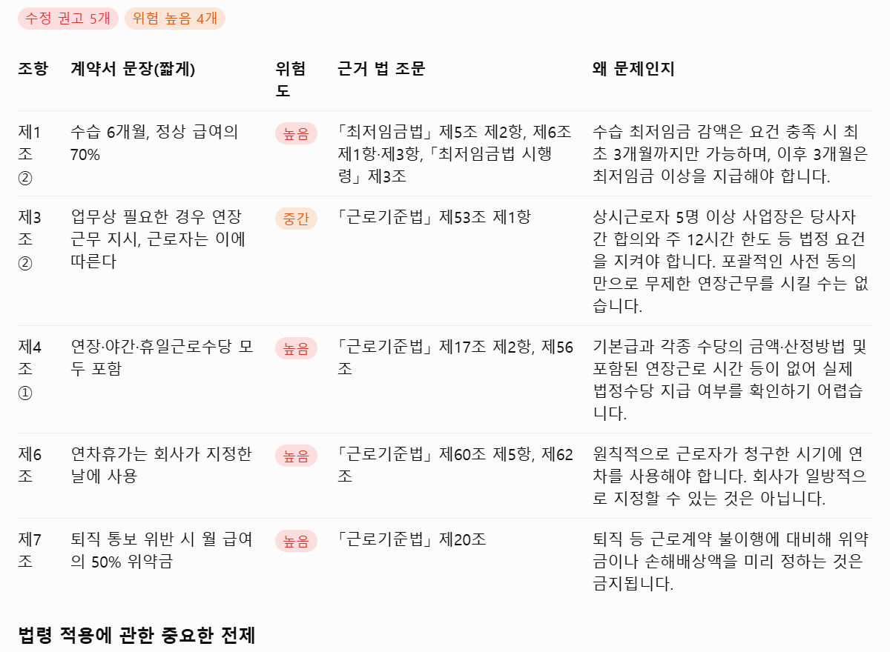

근로계약서 사진 한 장과 아래 요청 문장 하나를 클로드(또는 챗GPT)에 넣으면, 근로기준법·최저임금법에 걸릴 수 있는 조항만 골라 위험도와 근거 조문 번호를 붙인 표로 정리하고, 조항마다 인사 담당자에게 보낼 정중한 수정 요청 문장을 써 줘요. 한마디 더 하면 그 내용을 메일 한 통으로 묶어 줘요. 설치할 건 없어요 — 요청 문장 두 개와 쓰는 법만 알면 돼요. 법률 자문을 대신하지는 않아요.

계약서 전체가 한 장에 나오게 위에서 똑바로 찍어요. 올리기 전에 주민등록번호·주소·연락처·계좌번호는 펜이나 사진 편집으로 가려요. 이름과 회사 이름은 검토에 필요 없어서 가려도 돼요. 클로드는 '시크릿 채팅', 챗GPT는 '임시 채팅'을 쓰면 대화가 기록에 남지 않아요.

새 채팅 입력칸에 계약서 사진을 넣고(클립 버튼이나 붙여 넣기), 아래 '검토 요청 문장'을 붙여 넣어 보내요. 직원 수·정규직/아르바이트를 알면 문장 끝에 '회사 직원은 ○명, 아르바이트예요'처럼 한 줄 붙이면 더 정확해요. 사진이 안 올라가면 계약서 글을 그대로 붙여 넣고 첫 줄의 '첨부한'을 '아래'로 바꿔도 돼요.

맨 위 한 줄이 '고칠 조항 ○개 · 위험 높음 ○개', 그 아래 표예요. 위험도 '높음'은 법 조문에 바로 어긋날 가능성이 큰 것, '중간'은 고쳐 달라고 할 만한 것, '확인 필요'는 직원 수·수습처럼 계약서만으로는 판단이 갈리는 것이에요. '근거 법 조문' 칸의 법 이름과 조 번호로 원문을 직접 찾아볼 수 있어요(아래 6번). 표 화면은 맨 위 그림이에요.
표 아래에 조항마다 인사 담당자에게 보낼 문장이 하나씩 나와요. '~로 알고 있습니다', '~해 주실 수 있을까요?'처럼 따지지 않는 말투예요. 그대로 쓰거나 내 말투로 조금 고쳐 보내면 돼요.

같은 채팅에 아래 '메일 요청 문장'을 보내면, 사인 전에 확인받고 싶다는 인사로 시작해 조항마다 '지금 문장 → 바꿔 주셨으면 하는 문장 → 근거 조문' 순서로 메일 한 통을 써 줘요. 회사만 아는 금액(기본급·수당 구성 등)은 ○○○으로 비워 두니 확인하고 보내세요.

국가법령정보센터(law.go.kr) 검색창에 '근로기준법'을 넣고 들어가 조 번호(예: 제20조)를 찾으면 원문이 나와요. 주소창에 law.go.kr/법령/근로기준법/제20조 처럼 써도 바로 열려요. AI가 '확실하지 않다'고 표시한 조문은 꼭 원문으로 확인하세요. 최저임금은 '2026년 적용 최저임금 고시'(시간급 10,320원, 주 40시간 기준 월 2,156,880원)로 확인할 수 있어요.

쓰기 좋은 때: 합격 뒤 계약서를 받고 사인하기 전, 아르바이트 첫 출근 전, 재계약서를 받았을 때. 안 맞는 때: 이미 분쟁이 생겼거나(임금 체불·부당해고) 금액이 큰 합의서 — 이럴 땐 바로 노동청(국번 없이 1350)이나 노무사에게 가세요. 경업 금지처럼 판례로 판단하는 조항은 AI가 '확인 필요'로만 알려 줘요.
시연용 가상 계약서(수습 6개월 급여 70%, 연장근무 지시, 수당 모두 포함, 연차 회사 지정, 퇴직 30일 전 미통보 시 월급 50% 위약금, 퇴직 후 2년 동종 업계 취업 금지)를 클로드 무료 계정에 사진으로 넣었어요. 결과는 '고칠 조항 6개 · 위험 높음 2개' — 수습 급여(최저임금법 제5조 제2항·시행령 제3조), 위약금(근로기준법 제20조)이 높음, 수당 포함·연장근무·연차가 중간, 경업 금지가 확인 필요였어요. 직원 수가 계약서에 없어서, 5명 미만이면 연장근로 한도·가산수당·연차 규정이 빠진다는 설명도 따로 붙었어요.
제7조 위약금 조항의 수정 요청 문장은 '퇴직 통보 기간을 30일로 두는 것에는 이견이 없으나, 미준수 시 월급여의 50%를 위약금으로 배상하는 부분은 근로기준법 제20조(위약 예정의 금지)에 저촉될 수 있다고 알고 있습니다. 해당 문구를 삭제해 주실 수 있을까요?'였어요. 메일 요청 문장을 보내자 제목 '[근로계약서 서명 전 확인 요청]'으로 조항 6개를 같은 순서로 묶은 메일이 나왔어요.
시급 10,000원, 금·토·일 하루 7시간 휴게 없음, 주휴수당 없음, 연장근무도 같은 시급, 지각·결근 벌금 공제, 한 달 전 미통보 시 마지막 달 급여 없음, 계약서는 사업주 보관 — 이렇게 넣었어요. 결과는 '고칠 조항 7개 · 위험 높음 4개': 시급(최저임금법 제6조), 주휴수당(근로기준법 제55조), 휴게시간(제54조), 마지막 달 급여(제20·36·43조)가 높음, 벌금 공제·계약서 보관이 중간, 연장근무 같은 시급은 '확인 필요'(직원 5명 미만이면 가산수당 규정이 빠져서)였어요.

법에 맞게 쓴 계약서를 넣었더니 '명백히 위법한 조항은 찾지 못했습니다'와 함께 위험 높음 0개, 대신 '법에 따른다'고만 적힌 휴일·연차처럼 구체적으로 적어 달라고 할 만한 곳만 중간·확인 필요로 짚었어요(클로드). 챗GPT에서는 파일 첨부 한도에 걸려 같은 요청 문장 아래 계약서 글을 붙여 넣었고, '수정 권고 5개 · 위험 높음 4개' 표와 조항별 수정 요청 문장까지 나왔어요. 같은 계약서라도 앱·대화마다 위험도 판단이 조금씩 달라요 — 그래서 근거 조문을 직접 확인하는 게 중요해요.


새 채팅에서 계약서 사진과 같이
첨부한 근로계약서를 사인하기 전에 검토해 줘. 말투는 존댓말로. 1. 근로기준법·최저임금법 기준으로 문제가 될 수 있는 조항만 골라 표로 보여 줘: 조항 | 계약서 문장(짧게) | 위험도(높음·중간·확인 필요) | 근거 법 조문 | 왜 문제인지 한 줄. 2. 표 맨 위 한 줄에 "고칠 조항 ○개 · 위험 높음 ○개"를 써 줘. 문제 없는 조항은 표에 넣지 마. 3. 조항마다 인사 담당자에게 보낼 정중한 수정 요청 문장을 하나씩 써 줘. 4. 회사 직원 수(5명 미만이면 빠지는 규정), 수습, 주 근무 시간처럼 조건에 따라 판단이 달라지면 그 조건을 같이 적고, 계약서에 없는 정보는 지어내지 말고 '확인 필요'로 표시해 줘. 5. 근거는 국가법령정보센터(law.go.kr)에서 찾아볼 수 있게 법 이름과 조 번호를 정확히 써 줘. 확실하지 않은 조문은 확실하지 않다고 말해 줘. 6. 마지막에 계약서에 꼭 들어가야 하는 항목(임금 구성·계산·지급 방법, 소정근로시간, 휴일, 연차휴가) 중 빠진 게 있는지 한 줄로 알려 줘. 사진에서 안 읽히는 글씨는 지어내지 말고 물어봐 줘.
검토가 끝난 같은 채팅에서
위 검토에서 고칠 조항만 모아서 인사 담당자에게 보낼 메일로 정리해 줘. 사인 전에 확인받고 싶다는 인사로 시작하고, 조항마다 '지금 문장 → 바꿔 주셨으면 하는 문장 → 근거 조문' 순서로 정중하게 써 줘. 단정적으로 따지는 말투는 빼 줘.
검토 요청 문장 끝에 붙이기
회사 직원은 ○명이고, 저는 (정규직 / 계약직 / 아르바이트)로 일해요. 수습은 ○개월이에요.
도움이 되셨다면
@ai.antenna.kr
에서 바로 쓰는 AI 활용법을 계속 올립니다.